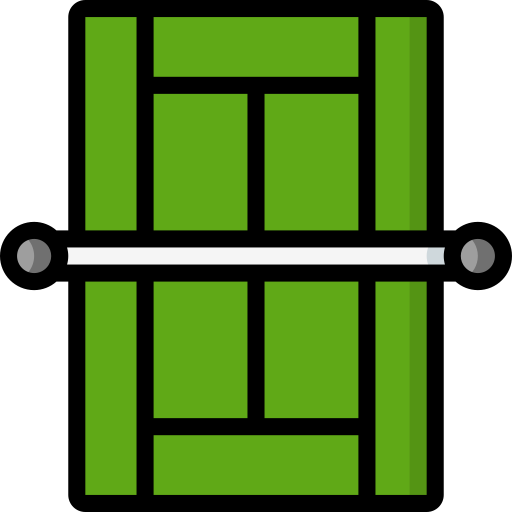

Torneos más importantes
04/11/21
Los 4 Grand Slams
Los torneos Grand Slams o los 4 grandes son los torneos más importantes del año, estos son:
- Australian Open
- Roland Garros
- Wimbledon
- US Open
Que se celebran respectivamente en:
- Melbourne, Australia
- Paris, Francia
- Londres, Inglaterra
- Nueva York, Estados Unidos
La persona con más Grand Slams ganados es Margaret Court, que tiene 24. En hombres hay un triple empate entre Djokovic, Nadal y Federer, los cuales han ganado 20 torneos de este tipo.

 Los mejores
jugadores del momento
Los mejores
jugadores del momento Sitios
oficiales para más información
Sitios
oficiales para más información
 Los mejores
puntos de Rafael Nadal
Los mejores
puntos de Rafael Nadal